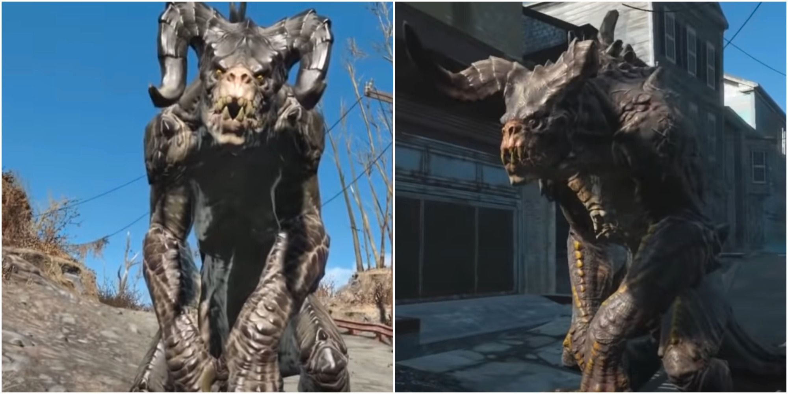

Fallout es una serie de videojuegos de rol publicados originalmente por Interplay, posteriormente por Bethesda Softworks y actualmente por Xbox Game Studios.
Fallout es una serie de videojuegos de rol publicados originalmente por Interplay, posteriormente por Bethesda Softworks y actualmente por Xbox Game Studios.
Son una especie ágil, fuerte y de gran tamaño provenientes de la mutación del camaleón de Jackson.
Son seres humanos mutados o animales afectados por el fenómeno de la necrofaguización.
Criatura típica de la saga, hace otra aparición en la cuarta entrega.
Son el primer enemigo, y el más débil, que se encuentra en el juego.
Estos son los principales juegos de la saga, adéntrate en un mundo postapocalíptico, con humor bizarro, mucha sangre y desgracia.